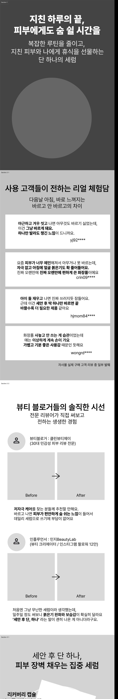
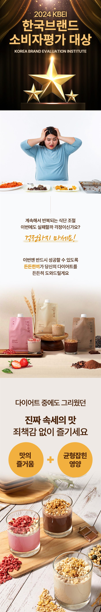
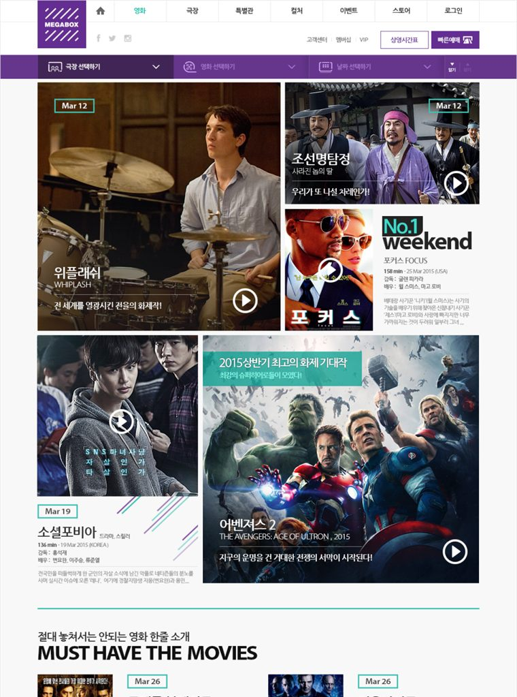
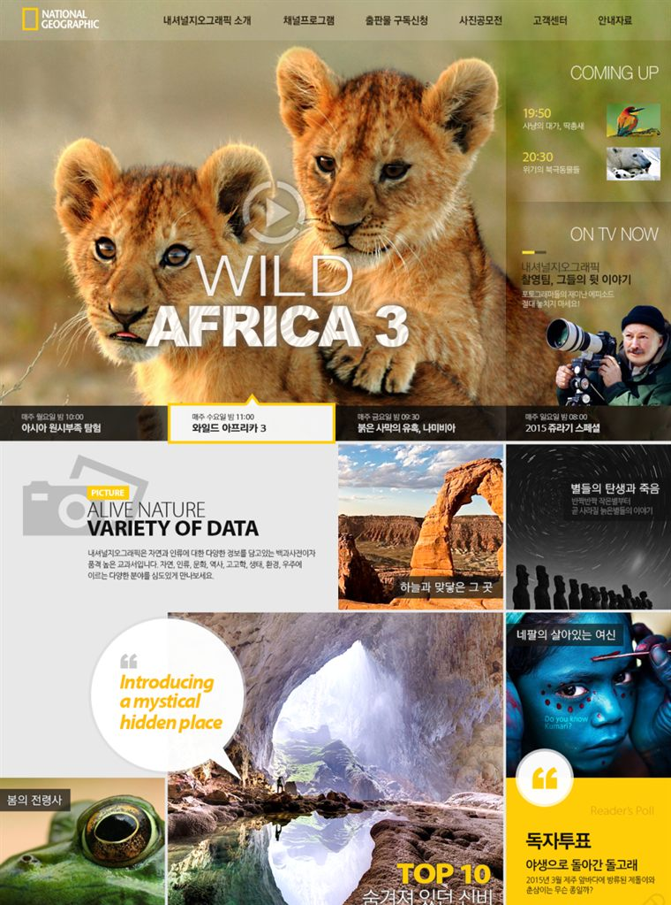
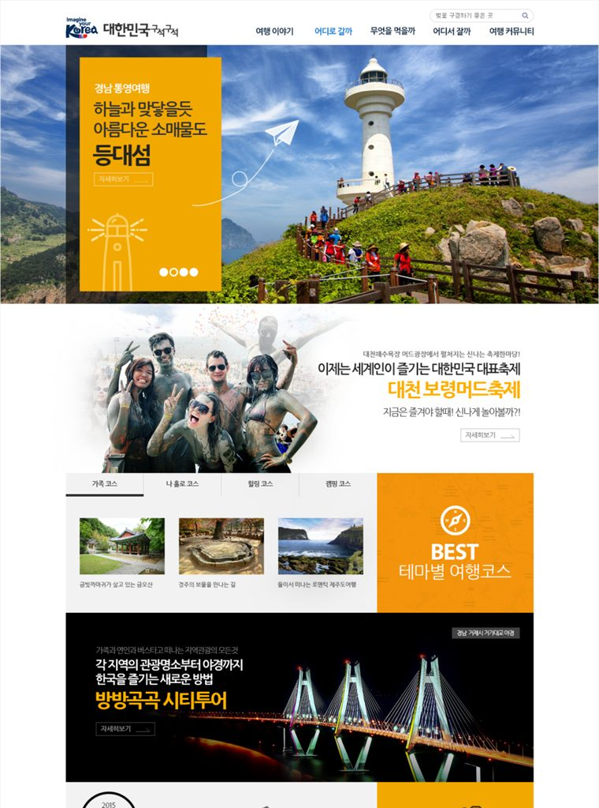
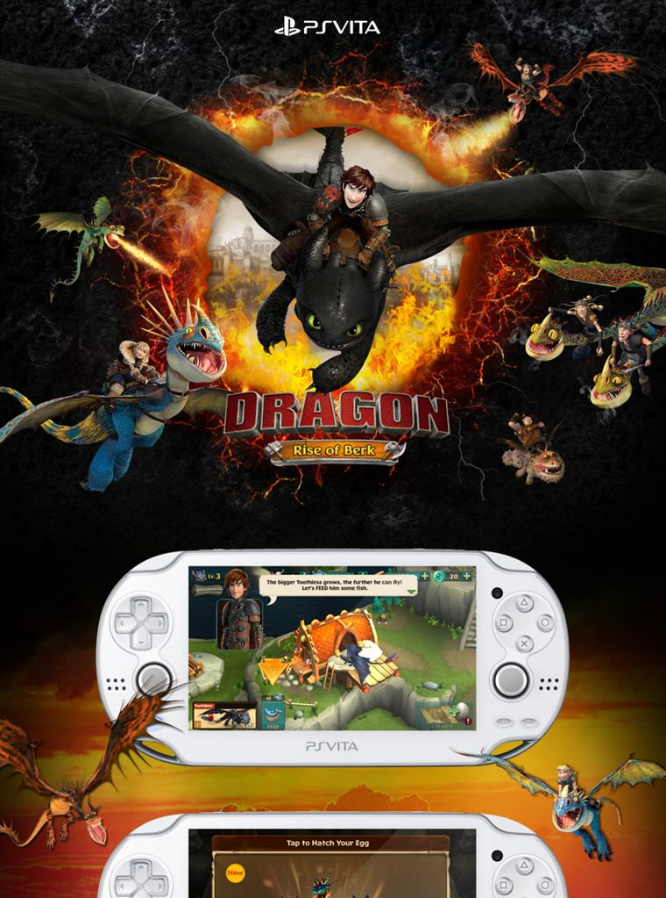
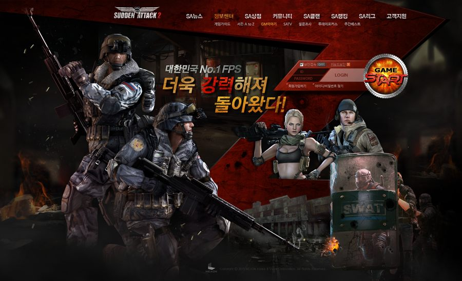
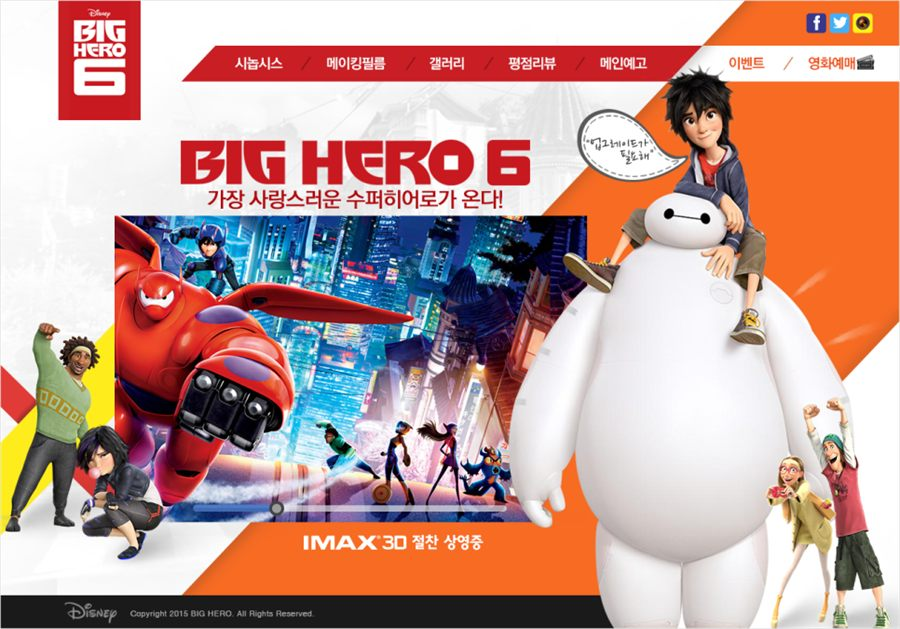

주식회사 브랜드숲 · BRAND SOOP
팔리지 않는 이유는 디자인이 아니라
설득 구조에 있습니다.
매출이 막히는 원인을 분석하고, 소비자 관점으로 전환 기준을 체계화하여 팔리는 상세페이지 구조로 재설계합니다.
박진이
UX 디자인 20년 · 브랜드숲 대표 · 상세페이지 설계자
주식회사 브랜드숲 · BRAND SOOP
매출이 막히는 원인을 분석하고, 소비자 관점으로 전환 기준을 체계화하여 팔리는 상세페이지 구조로 재설계합니다.
감각이 아니라 성과로 판단하는 분들과 일합니다. 매출, Q&A 감소, 구매 전환처럼 숫자로 확인되는 결과를 기준으로 삼는 실무자입니다.
결과가 나쁘지 않았지만 들쑥날쑥했습니다. 왜 팔리는지 설명할 수 없다는 것이 문제였습니다.
감각은 있었지만
기준은 없었다
문제설계 기준이 없었기에 ‘잘 만든다’는 확신 대신 ‘많이 넣는다’에 의존했다.
디자인 문제가 아니라
설득 구조 문제였다
깨달음상세페이지는 예쁘게 만드는 일이 아니라 설득 논리를 구조화하는 일이다.
설계 기반으로
일하는 사람
변화감각형 디자이너에서 구조형 설계자로. 작업자에서 기준을 만드는 사람으로.
디자인은 구조가 완성된 뒤에 시작합니다. 아래 순서는 바꾸지 않습니다. 앞 단계를 건너뛰면 뒤 단계에서 반드시 되돌아오기 때문입니다.
설계 유형을 분류한다
이 상품이 어떤 유형인지 먼저 정합니다. 유형에 따라 설득의 중심축이 달라집니다.
설득 구조를 점검한다
핵심 설득 축이 빠짐없이 있는지, 근거의 밀도가 부족인지 과잉인지 판단합니다.
구매 상황을 한 문장으로 정의한다
“이 제품은 ______ 할 때 구매된다.” 타겟을 ‘모두’가 아니라 ‘한 사람’으로 가정합니다.
Out제품의 구매 맥락이 명확해진다
불안과 기대를 적는다
구매자가 망설일 이유 세 가지, 기대하는 것 세 가지. 기능이 아니라 감정과 결과 중심으로 씁니다.
Out설득해야 할 지점이 드러난다
판매자의 설명을 구체화한다
판매자가 말한 문장을 그대로 적고, 각 문장에 “왜요?”를 붙입니다. 프리미엄·노하우 같은 추상어는 구체적 기준과 수치가 나올 때까지 되묻습니다.
Out막연한 설명이 구체적 설득 요소로 바뀐다
뾰족한 해결 포인트 하나를 고른다
구매 상황과 직접 연결되는가, 불안을 줄여주는가, 다른 제품과 구분되는가. 둘 이상 해당하는 요소를 중심 메시지로 선택합니다.
Out상세페이지의 중심 메시지 결정
블록 구조를 설계하고 시각화한다
중심 메시지를 첫 블록에 두고 상황 → 불안 → 해결 → 근거 → 구매유도 순으로 정리합니다. 한 블록에 한 역할만 둡니다.
Out설계 기반의 설득 흐름이 있는 상세페이지
왼쪽은 색과 이미지를 걷어낸 설계안입니다. 이 단계에서 블록의 역할과 문장이 확정됩니다. 오른쪽은 같은 방식으로 설계를 마친 뒤 완성한 상세페이지입니다.

↓ 스크롤해서 전체 보기

↓ 스크롤해서 전체 보기
상세페이지 이전에는 웹 서비스의 UX와 화면을 설계했습니다. 사용자가 어디서 멈추고 무엇을 못 찾는지 보는 훈련이 지금 설계의 기반입니다.






에이전시 및 인하우스 UX디자인 재직 시 참여한 작업입니다. 각 저작권은 해당 브랜드에 있습니다.
20년
2006년부터 설계해 왔습니다
상세페이지도 같은 구조입니다. 클라이언트가 보여주고 싶은 것과 소비자가 알고 싶은 것, 서로 다른 두 관점을 한 장 안에서 만나게 하는 일입니다.
가능합니다. 예쁘게 만드는 법이 아니라 설득 구조를 세우는 법이 먼저입니다. 구조가 서면 디자인은 그 구조를 표현하는 일이 됩니다.
가능합니다. 초기에는 결과물이 아니라 설계 기준을 만드는 단계에 집중합니다. 포트폴리오는 그 기준을 적용한 작업을 통해 이후에 쌓입니다.
실제 의뢰가 없어도 기존 상세페이지를 분석하는 훈련부터 시작합니다. 처음부터 고객이 있어야만 가능한 구조가 아닙니다.
설계 단계에서 방향과 근거를 먼저 정리합니다. 근거를 설명할 수 있으면 수정은 감정이 아니라 판단의 문제가 됩니다.
판매자의 말이 아니라 구매 상황에서 출발합니다. 구매자가 불안해하는 지점과 기대하는 지점을 구조로 정리하면 필요한 근거가 정해집니다.
됩니다. 설계는 독립된 작업이며 제작과 분리할 수 있습니다. 현재 상세페이지 시장에서는 보기 드문 포지션이라 만족도가 높은 편입니다.
“제품과 고객을 이해하려는 마음에서 시작합니다.
그렇게 정돈된 한 장이, 고객의 마음을 움직입니다.”